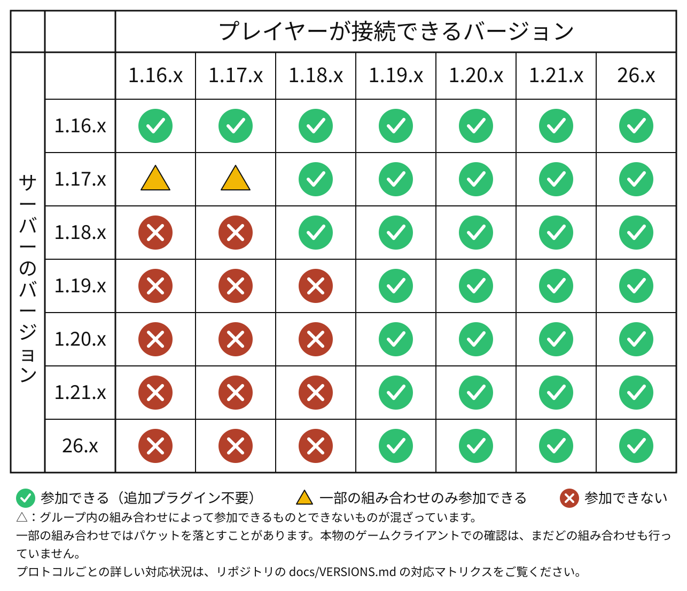

対応バージョン
1.14.1 から 26.3 まで、35 プロトコルに対応済みです。クライアント × サーバーは 35 × 35 = 1,225 通りです。1.14（477）は最終検証中です。最終目標は 1.0 から最新までの全バージョン対応です。
対応済 プロトコルレベルで検証済み 作業中 実装中 予定 未着手
「対応済」はプロトコルレベルの検証（偽クライアントと本物のバニラサーバーによるテスト）が通っている状態です。本物のゲームクライアントでの確認は、まだどの組み合わせも行っていません。1,225 通りのうち、統合テストで確認済みなのは一部です（1.18.2 を含む組み合わせは 6 セル、1.14.x・1.15.x は各バージョン数セルずつ）。残りは単体テストで確認しています。
Java Edition
| バージョン | プロトコル | 状態 | Java | リソースパック形式 | 備考 |
|---|---|---|---|---|---|
| 1.14 | 477 | 作業中 | 8 | 4 | 最終検証中 |
| 1.14.1 | 480 | 対応済 | 8 | 4 | 1.14.2 とワイヤ形式が同一 |
| 1.14.2 | 485 | 対応済 | 8 | 4 | |
| 1.14.3 | 490 | 対応済 | 8 | 4 | |
| 1.14.4 | 498 | 対応済 | 8 | 4 | 1.15 系とはパケット・形式が異なる |
| 1.15 | 573 | 対応済 | 8 | 5 | 1.15 系はワイヤ形式が共通 |
| 1.15.1 | 575 | 対応済 | 8 | 5 | |
| 1.15.2 | 578 | 対応済 | 8 | 5 | |
| 1.16 | 735 | 対応済 | 8 | 5 | |
| 1.16.1 | 736 | 対応済 | 8 | 5 | |
| 1.16.2 | 751 | 対応済 | 8 | 6 | |
| 1.16.3 | 753 | 対応済 | 8 | 6 | |
| 1.16.4 / 1.16.5 | 754 | 対応済 | 8 | 6 | |
| 1.17 | 755 | 対応済 | 16 | 7 | |
| 1.17.1 | 756 | 対応済 | 16 | 7 | |
| 1.18 / 1.18.1 | 757 | 対応済 | 16 | 8 | |
| 1.18.2 | 758 | 対応済 | 17 | 8 | 設定フェーズなし。旧式チャット（署名なし） |
| 1.19 | 759 | 対応済 | 17 | 9 | 署名付きチャットはここで導入（初代インライン署名形式） |
| 1.19.1 / 1.19.2 | 760 | 対応済 | 17 | 9 | 1パックで両バージョン共用。チャットの署名形式が759と異なる |
| 1.19.3 | 761 | 対応済 | 17 | 12 | |
| 1.19.4 | 762 | 対応済 | 17 | 13 | 1.19系の土台。設定フェーズなし |
| 1.20 / 1.20.1 | 763 | 対応済 | 17 | 15 | 最初の対応バージョン |
| 1.20.2 | 764 | 対応済 | 17 | 18 | |
| 1.20.3 / 1.20.4 | 765 | 対応済 | 17 | 22 | |
| 1.20.5 / 1.20.6 | 766 | 対応済 | 21 | 32 | アイテムがデータコンポーネント方式に |
| 1.21 / 1.21.1 | 767 | 対応済 | 21 | 34 | |
| 1.21.2 / 1.21.3 | 768 | 対応済 | 21 | 42 | |
| 1.21.4 | 769 | 対応済 | 21 | 46 | |
| 1.21.5 | 770 | 対応済 | 21 | 55 | |
| 1.21.6 | 771 | 対応済 | 21 | 63 | |
| 1.21.7 / 1.21.8 | 772 | 対応済 | 21 | 64 | 1パックで両バージョン共用 |
| 1.21.9 / 1.21.10 | 773 | 対応済 | 21 | 69 | 1パックで両バージョン共用 |
| 1.21.11 | 774 | 対応済 | 21 | 75 | |
| 26.1 / 26.1.1 / 26.1.2 | 775 | 対応済 | 25 | 84 | 26.1.1 / 26.1.2 も同じプロトコル 775 を共有 |
| 26.2 | 776 | 対応済 | 25 | 88 | Chaos Cubed。2026-06-16 リリース。データバージョン 4903 |
| 26.3 | 777 | 対応済 | 25 | 97 | ファットjarで起動確認済み |
759 と 760 はリソースパック形式がどちらも 9 ですが、ファイルは別です。Java の要件は内部サーバーを動かすときのものです。クライアント側は各バージョンのバニラと同じ要件です。
対応マトリクス
どのバージョンのプレイヤーが、どのバージョンのサーバーに接続できるかの一覧です。ViaVersionのような追加プラグインは不要です。新しいバージョンのプレイヤーは古いサーバーに参加できますが、古いプレイヤーが新しいサーバーに参加できない組み合わせもあります。
参加できる（追加プラグイン不要） 一部の組み合わせのみ参加できる 参加できない
△は、グループ内の組み合わせによって参加できるものとできないものが混ざっているセルです。1.17.xサーバー×1.16.xクライアントは1.17サーバー（755）の場合のみ参加でき、1.17.1サーバー（756）には参加できません。1.17.xサーバー×1.17.xクライアントは、1.17クライアント→1.17.1サーバーの組み合わせを除いて参加できます。
26.xの✕は、26.1（775）サーバーで古いクライアントが参加できないことを確認したものです。26.3（777）・26.2（776）サーバーと古いクライアントの組み合わせは未確認です。26.xの✓と1.18.xのセルも、26.2（776）・1.18.2（758）の組み合わせは未確認です。
一部の組み合わせではパケットを落とすことがあります（制限付き）。プロトコルごとの詳しい対応状況は、リポジトリの docs/VERSIONS.md の対応マトリクスをご覧ください。本物のゲームクライアントでの確認は、まだどの組み合わせも行っていません。

Bedrock Edition
Bedrock は RakNet プロトコル 63 個（291〜2193）に対応し、1.7.1 から 26.52 までをカバーしています。Java 側のブロック・バイオーム・エンティティを Bedrock へ翻訳します。UDP 19132 番で待ち受けます。
- 対応済：Bedrock 1.7.1〜26.52（プロトコル 291〜2193）。プロトコル 2225（26.60〜26.65）はパケット形式のみ対応。チャンク・ブロック状態・エンティティの翻訳、チャット・移動・攻撃・インタラクトに対応。
- 未対応：Bedrock 26.60〜26.65（プロトコル 2225）は NetherNet ベースのため実クライアントは繋がらず、パケット形式のみ対応です。接続したクライアントには未対応の切断メッセージを返します。インベントリも未対応です。
これからの予定
| バージョン | 状態 | 備考 |
|---|---|---|
| 1.13.x 以前（1.0〜1.13.x） | 予定 | 578 から下へ 1 つずつ遡る作業を進めていて、480（1.14.1）まで完了。目標は 335（1.12） |
| エイプリルフール版（2.0、15w14a、20w14∞、24w14potato、25w14craftmine など） | 予定 | 通常のリリースとはプロトコルも内容も異なるため、それぞれ専用の対応が必要です |
バージョンごとの開発ブランチは、リポジトリのブランチ一覧で確認できます。